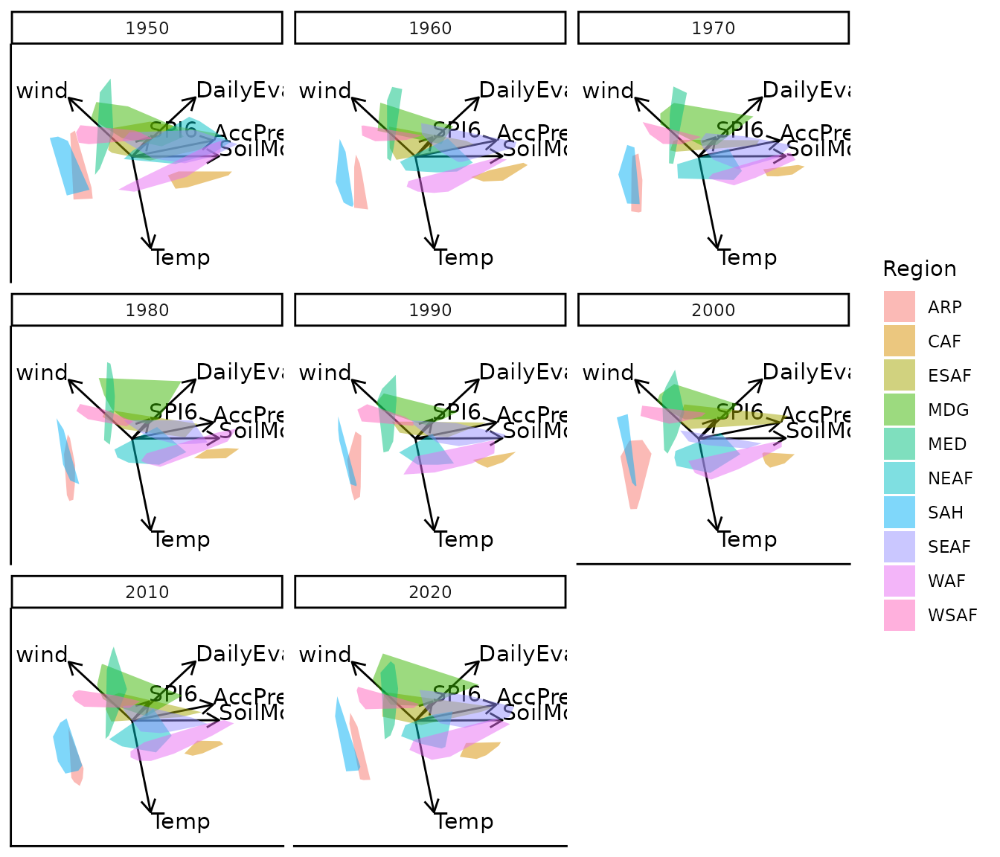
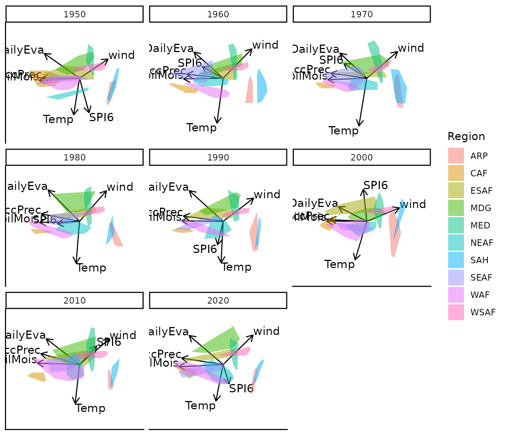

moveEZ
moveEZ.RmdConsider a dataset comprising observations and continuous variables, along with an additional variable representing “time”. This time variable need not correspond to chronological time; it could just as well represent another form of ordered index, such as algorithmic iterations or experimental stages.
A natural approach is to construct separate biplots for each level of the time variable, enabling the user to explore how samples and variable relationships evolve across time. However, when the time variable includes many levels, this quickly results in an overwhelming number of biplots.
This package addresses that challenge by animating a single biplot across the levels of the time variable, allowing for dynamic visualisation of temporal or sequential changes in the data.
The animation of the biplots—currently limited to PCA biplots—is based on two conceptual frameworks:
Fixed Variable Frame
moveplot(): A biplot is first constructed using the full dataset , and the animation is achieved by slicing the observations according to the “time” variable. In this approach, the variable axes remain fixed, and only the sample points are animated over time.Dynamic Frame
moveplot2()andmoveplot3(): Separate biplots are constructed for each time slice of the data. Both the sample points and variable axes evolve over time, resulting in a fully dynamic animation that reflects temporal changes in the underlying data structure. The differences between these functions are highlighted in the subsequent sections.
To illustrate the animated biplots, we use a climate dataset included in the package. This dataset, Africa_climate, contains climate measurements from 10 African regions over time:
library(moveEZ)
data("Africa_climate")
tibble::tibble(Africa_climate)
#> # A tibble: 960 × 9
#> Year Month Region AccPrec DailyEva Temp SoilMois SPI6 wind
#> <fct> <fct> <fct> <dbl> <dbl> <dbl> <dbl> <dbl> <dbl>
#> 1 1950 January ARP 0.177 0.0316 14.8 2.75 1.62 4.07
#> 2 1950 February ARP 0.208 -0.0249 15.4 2.22 1.32 4.24
#> 3 1950 March ARP 0.306 0.0122 20.9 2.08 0.987 4.04
#> 4 1950 April ARP 0.196 0.00396 24.8 1.73 0.916 3.72
#> 5 1950 May ARP 0.590 -0.0448 28.4 2.47 0.691 3.91
#> 6 1950 June ARP 0.32 -0.00754 30.4 1.17 0.249 4.40
#> 7 1950 July ARP 1.33 0.00184 30.8 2.00 0.673 4.93
#> 8 1950 August ARP 1.82 -0.00944 30.5 2.67 0.937 4.45
#> 9 1950 September ARP 0.706 -0.0107 29.7 1.98 1.22 3.67
#> 10 1950 October ARP 0.102 -0.0259 25.9 0.976 1.65 3.18
#> # ℹ 950 more rowsWe begin by constructing a standard PCA biplot using the
biplotEZ package. This biplot aggregates all samples across
time and colours them according to their associated region:
library(biplotEZ)
bp <- biplot(Africa_climate, scaled = TRUE) |>
PCA(group.aes = Africa_climate$Region) |>
samples(opacity = 0.8, col = scales::hue_pal()(10)) |>
plot()Fixed Variable Frame with moveplot()
Using the previously created PCA biplot object bp, the
moveplot() function enables animation of the sample points
over time. This function is piped with several key arguments:
time.var: Specifies the name of the variable in the dataset that represents the temporal or sequential dimension. In this case, the variable “Year” relates to the time variable.group.var: Indicates a grouping variable used for colour-coding. In this case, the variable “Region” relates to the group variable.hulls: A logical flag that determines whether to display individual sample points or to draw convex hulls around each group.
move: A critical argument that controls whether the
biplot is animated. If set to TRUE, the sample points are
animated across time. If set to FALSE, the function returns
a faceted plot showing a static biplot for each time level.
This design provides flexibility in exploring temporal dynamics in multivariate data, with options for both animated and comparative static visualisations.
Facet: move = FALSE
bp |> moveplot(time.var = "Year", group.var = "Region", hulls = TRUE, move = FALSE)
#> Object of class biplot, based on 960 samples and 9 variables.
#> 6 numeric variables.
#> 3 categorical variables.
Dynamic Frame moveplot2()
The moveplot2() function extends the animation to both
the sample points and the variable axes. Unlike moveplot(),
which keeps the variable axes fixed, moveplot2() constructs
a separate biplot for each time slice, allowing both components to
evolve over time. The function shares the same arguments as
moveplot(), with the move argument determining
whether the animation is shown or presented as static facets for samples
and variables.
Facet: move = FALSE
bp |> moveplot2(time.var = "Year", group.var = "Region", hulls = TRUE, move = FALSE)
#> Object of class biplot, based on 960 samples and 9 variables.
#> 6 numeric variables.
#> 3 categorical variables.When move is FALSE, a faceted plot is
returned, showing the biplot at each time point. Here, both the sample
coordinates and variable axes differ across facets, reflecting temporal
changes in the data structure.
There is a noticeable discontinuity in the transition from the year
1950 to 1960. From 1960 onwards, however, the biplots appear
well-aligned. To address such inconsistencies, the
moveplot2() function provides two additional arguments —
align.time and reflect — which enable
alignment and optional axis reflections of the biplots at specified time
points, resulting in smoother and more coherent animations.
Animated: move = TRUE

Setting move to TRUE produces an animated biplot in
which both the samples and variables transition across time, offering a
dynamic view of structural shifts in the multivariate space.
In the example above, we align the biplot at the 1950 time point and apply a reflection about the x-axis. Available options include:
“x” – Reflect about the x-axis
“y” – Reflect about the y-axis
“xy” – Reflect about both axes
And of course, both align.time and reflect
can be vectors when alignment is needed at multiple time points. Each
entry in reflect corresponds to a time point in
align.time, allowing fine-grained control over the
alignment and orientation of biplots across the animation sequence.
Dynamic frame with alignment to a target with
moveplot3()
This function shares the same arguments as moveplot()
and moveplot2(), with the addition of the
target argument. moveplot3() utilises
Generalised Orthogonal Procrustes Analysis (GPA) to align sample points
and variable axes to either a specified target (for example: same
measurements at a different time point) or to a centroid coordinate
matrix representing all sample points and axes across time slices
(target = NULL). GPA is applied by using the
GPAbin package and makes use of admissible transformations
(translation, scaling, rotation and reflection) to optimally align
configurations, while preserving the distances between coordinates. As
with moveplot2() the move argument determines
whether the animations of changing sample points and variables axes are
shown or presented as static facets.
To illustrate the use of a fixed target, we use the year 1989 from
the Africa_climate data set, which consists of the same
variables and number of observations:
data("Africa_climate_target")
tibble::tibble(Africa_climate_target)
#> # A tibble: 120 × 9
#> Year Month Region AccPrec DailyEva Temp SoilMois SPI6 wind
#> <fct> <chr> <chr> <dbl> <dbl> <dbl> <dbl> <dbl> <dbl>
#> 1 1989 January ARP 0.0740 -0.00416 14.9 1.11 -1.08 4.06
#> 2 1989 February ARP 0.235 -0.00161 17.3 1.55 -0.817 4.19
#> 3 1989 March ARP 0.815 -0.0220 21.5 2.70 0.00329 4.12
#> 4 1989 April ARP 0.495 0.0508 25.0 2.90 0.226 3.48
#> 5 1989 May ARP 0.0411 -0.0130 30.1 1.08 0.306 3.96
#> 6 1989 June ARP 0.0693 -0.0234 31.6 0.633 0.261 4.33
#> 7 1989 July ARP 0.0833 -0.0164 33.1 0.606 0.527 4.36
#> 8 1989 August ARP 0.137 -0.0209 32.6 0.685 0.575 4.05
#> 9 1989 September ARP 0.102 -0.0246 30.1 0.656 0.0360 3.56
#> 10 1989 October ARP 0.0330 -0.0549 26.5 0.449 -0.919 3.45
#> # ℹ 110 more rowsFacet: move = FALSE and target = NULL
bp |> moveplot3(time.var = "Year", group.var = "Region", hulls = TRUE, move = FALSE,
target = NULL)
#> Object of class biplot, based on 960 samples and 9 variables.
#> 6 numeric variables.
#> 3 categorical variables.The separate biplots per time.var are transformed and
aligned to the centroid coordinate matrix of all observed sample points
and axes variables.
Facet: move = FALSE and
target = Africa_climate_target
bp |> moveplot3(time.var = "Year", group.var = "Region", hulls = TRUE, move = FALSE,
target = Africa_climate_target)
#> Object of class biplot, based on 960 samples and 9 variables.
#> 6 numeric variables.
#> 3 categorical variables.Now, the separate biplots per time.var are transformed
and aligned to the sample points and axes variables of the 1989
Africa_climate dataset. Take note: the
target biplot is not shown. This example showcases the difference
between each the observations and variables for each year in
Africa_climate compared to 1989.
Animated: move = TRUE and
target = NULL
Here the animated view of the biplots over time are illustrated after aligning the visualisation to the centroid configuration.
Animated: move = TRUE and
target = Africa_climate_target
Finally, the animated biplots illustrate the transformations towards
a specified target dataset. Again, the focus is on the movement that
changes between the variables and sample representation as the target is
set to a specific year compared to the movement observed in the previous
example where target = NULL. Therefore, these animations
expose the jumps that occur from 1989 to each of the years in
Africa_climate from 1950 to 2020 (in increments of 10
years).